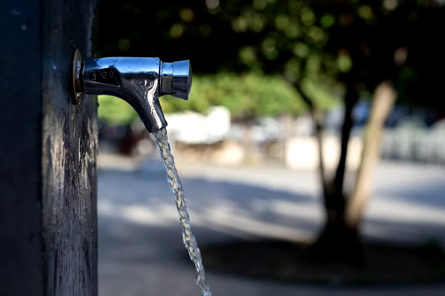
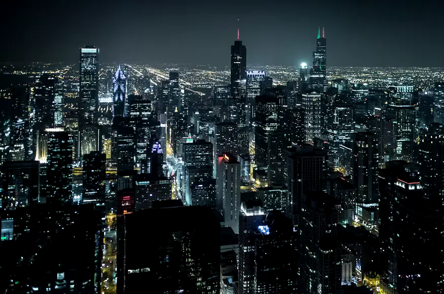
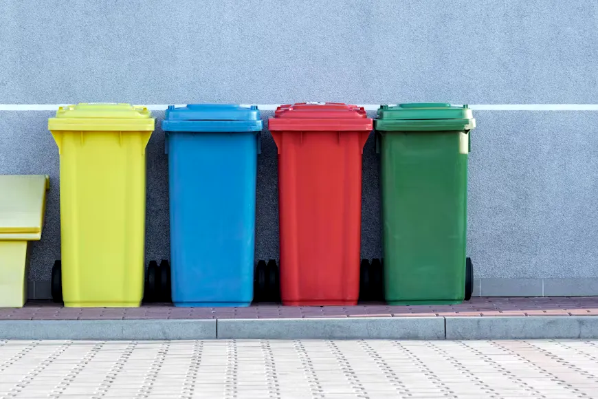

Water security
Leakage in the network fell from 34% to 12% in five years. Treated wastewater now irrigates every public park.
Clean energy, clean air and less waste are tracked with the same live sensors that run the city. Every number here can be checked against open data.
Rings fill to show how far each target has come. Numbers are audited every year by an independent body.
Towards a 50% cut in emissions per resident
Share of electricity from solar and wind
Households segregating waste at source
City area under tree cover, target 33%

Rooftop solar, wind farms beyond the ring road and neighbourhood batteries now cover more than half of daytime demand.
Two hundred sensors report pollutants every minute. Values shown are a sample feed for this demonstration.
Good Safe for all outdoor activity
Two circular systems, one goal: give back more than we take.

Leakage in the network fell from 34% to 12% in five years. Treated wastewater now irrigates every public park.

Smart bins signal when they are full, cutting collection trips by a third. Organic waste becomes compost and biogas.
Promise one small habit for the next thirty days. Together, small habits become tonnes of carbon saved.
residents have already pledged
Swap one short car trip a day.
Switch off idle devices at night.
Send food scraps to the green bin.
Adopt a sapling in your ward.